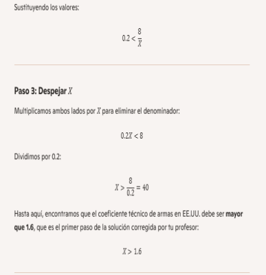
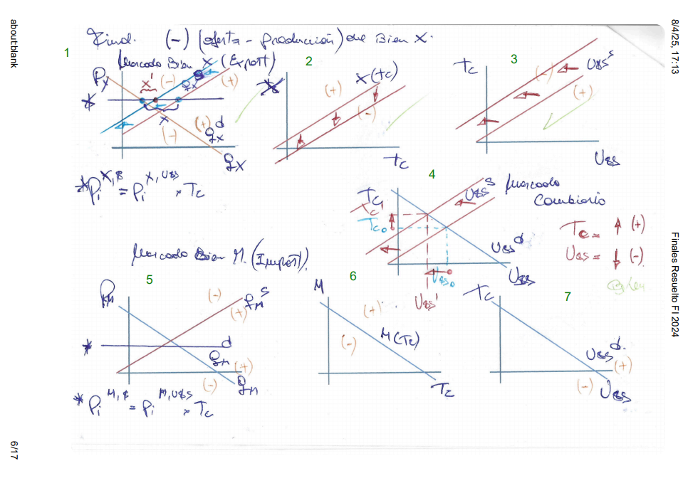
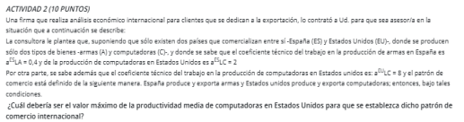
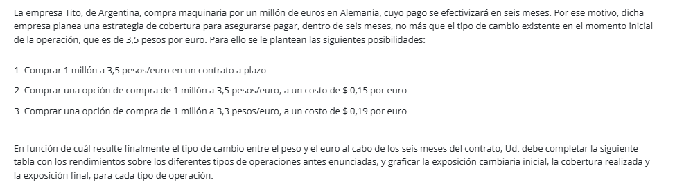
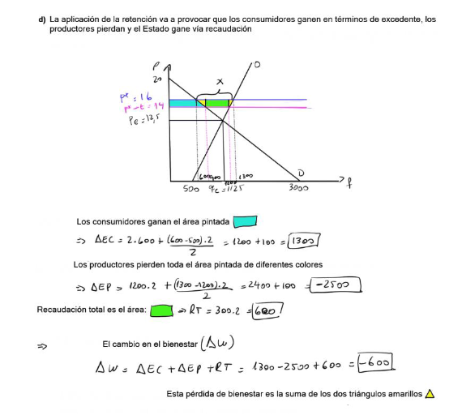
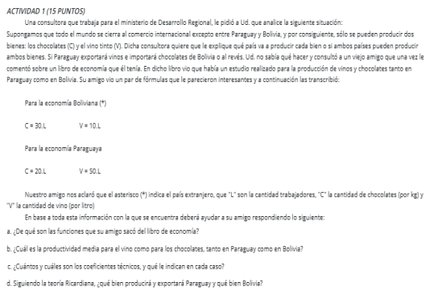
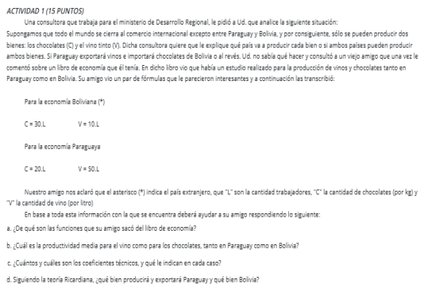
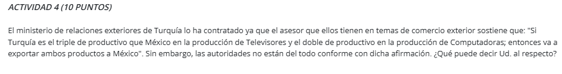

Análisis del Tipo de Cambio ante Aumento de la Demanda Interna del Bien Exportable

Gráfico 1: Oferta y demanda del bien exportable
- Muestra la relación entre el precio PxP_x y la cantidad de bien exportado QxQ_x.
- Hay dos curvas:
- Demanda QxdQ_x^d (lo que los consumidores nacionales y extranjeros quieren comprar).
- Oferta QxsQ_x^s (lo que los productores venden en el mercado).
- Un aumento en la demanda interna desplaza la curva de demanda hacia la derecha, elevando el precio interno del bien exportable.
- Impacto: Como el bien se encarece, se reduce la cantidad exportada, lo que afecta el mercado de divisas.
🔸 Gráfico 2: Relación entre exportaciones y tipo de cambio
- Representa cómo el volumen de exportaciones X(Tc)X(Tc) afecta el tipo de cambio Tc.
- A medida que disminuye la cantidad de bienes exportados, la oferta de divisas cae, empujando el tipo de cambio hacia arriba.
- Impacto: La moneda local se deprecia porque hay menos dólares entrando por exportaciones.
🔸 Gráfico 3: Oferta de dólares en el mercado cambiario
- Muestra la oferta de dólares Uss en función del tipo de cambio Tc.
- Como las exportaciones bajan, hay menos dólares en el mercado, desplazando la curva de oferta hacia la izquierda.
- Impacto: Si la oferta de dólares disminuye, el tipo de cambio se incrementa, reflejando la depreciación de la moneda local.
🔸 Gráfico 4: Equilibrio en el mercado cambiario
- Representa el nuevo equilibrio en la oferta y demanda de dólares después de la caída en exportaciones.
- La curva de oferta Uss se ha desplazado, y el nuevo equilibrio muestra un tipo de cambio más alto.
- Impacto: La moneda local pierde valor frente al dólar, lo que puede generar efectos en precios e inflación.
🔸 Gráfico 5: Impacto en el precio del bien importable
- Muestra el mercado de importaciones y cómo los cambios en el tipo de cambio afectan el precio interno de bienes importados PmP_m.
- La curva de oferta y demanda de bienes importados QmsQ_m^s y QmdQ_m^d muestran ajustes en precios.
- Impacto: Con un tipo de cambio más alto, los bienes importados se encarecen, aumentando los costos internos.
🔸 Gráfico 6: Variación en la cantidad de importaciones
- Muestra la relación entre el volumen de importaciones M(Tc)M(Tc) y el tipo de cambio.
- Si el tipo de cambio aumenta, las importaciones pueden reducirse debido al mayor costo en moneda local.
- Impacto: Empresas y consumidores ajustan su consumo de bienes importados por el encarecimiento.
🔸 Gráfico 7: Nuevo equilibrio en el mercado de divisas
- Similar al gráfico 4, representa cómo el mercado cambiario se ajusta después de todos los cambios en exportaciones e importaciones.
- Impacto: La economía enfrenta un nuevo equilibrio cambiario, con efectos sobre precios internos y comercio exterior.
- EJEMPLO EN EL CASO DE QUE DISMINUYA
1️⃣ Primer gráfico: Oferta y producción del bien X
- Representa la oferta y demanda del bien exportable en el mercado interno.
- La ecuación PiX=PiX,UBSd∗TCP_i^X = P_i^X, U_{BS}^d * TC sugiere que el precio del bien está vinculado al tipo de cambio.
- Si la producción disminuye, hay menos oferta disponible, lo que impacta en exportaciones.
- Impacto: Menos bienes exportados → Menos ingresos de dólares → Posible aumento del tipo de cambio.
2️⃣ Segundo gráfico: Relación entre tipo de cambio y exportaciones
- Muestra cómo el volumen de exportaciones X(TC)X(TC) depende del tipo de cambio.
- Si las exportaciones caen, la oferta de dólares en el mercado disminuye, afectando el equilibrio cambiario.
- Impacto: Menos oferta de dólares → Tipo de cambio tiende a subir.
3️⃣ Tercer gráfico: Ajuste en la oferta de dólares
- Representa la oferta de dólares UBSsU_{BS}^s en función del tipo de cambio.
- Cuando la oferta de dólares cae, el tipo de cambio se ajusta al alza.
- Impacto: Mayor tipo de cambio → Posible inflación en bienes importados.
4️⃣ Cuarto gráfico: Equilibrio en el mercado cambiario
- Representa cómo se ajusta el mercado de divisas ante la menor oferta de dólares.
- La reducción de exportaciones desplaza la curva de oferta de dólares, ajustando el tipo de cambio.
- Impacto: Nuevo equilibrio con un tipo de cambio más alto.
5️⃣ Quinto gráfico: Mercado del bien importable
- Relación entre el precio de bienes importados PiMP_i^M y el tipo de cambio.
- Si el tipo de cambio sube, los bienes importados se encarecen en el mercado interno.
- Impacto: Menor acceso a bienes importados → Posible impacto en consumo.
6️⃣ Sexto gráfico: Ajuste en las importaciones
- Muestra cómo el volumen de importaciones M(TC)M(TC) se ajusta al tipo de cambio.
- Si el tipo de cambio sube, el costo de importar bienes aumenta, reduciendo las compras externas.
- Impacto: Empresas y consumidores ajustan su demanda de bienes importados.
7️⃣ Séptimo gráfico: Nuevo equilibrio cambiario
- Representa el nuevo estado del mercado cambiario tras la reducción en exportaciones e importaciones.
- Impacto: Se establece un nuevo equilibrio con un tipo de cambio más alto.
EJEMPLO EXPLICADO DE AUMENTO X Y M

1️⃣ Primer gráfico: Mercado del bien exportable (BX)
- Representa la oferta y demanda del bien exportable en función de su precio interno.
- La ecuación PiX=PiX⋅UBSd×TCP_i^X = P_i^X \cdot U_{BS}^d \times TC indica que el precio del bien está influenciado por el tipo de cambio y la demanda externa.
- Impacto: Si la producción y oferta del bien exportable disminuyen, la cantidad exportada baja y afecta la entrada de divisas.
2️⃣ Segundo gráfico: Relación entre exportaciones y tipo de cambio
- Muestra cómo el volumen de exportaciones X(TC)X(TC) responde a cambios en el tipo de cambio.
- Si el tipo de cambio sube, los bienes exportables pueden volverse menos competitivos en el mercado internacional.
- Impacto: Una reducción en exportaciones puede generar menor oferta de dólares en el mercado cambiario.
3️⃣ Tercer gráfico: Oferta de dólares en el mercado cambiario
- Representa la oferta de dólares UBSsU_{BS}^s en función del tipo de cambio.
- Si las exportaciones caen, la oferta de dólares también baja, desplazando la curva de oferta hacia la izquierda.
- Impacto: Menos dólares en circulación tienden a aumentar el tipo de cambio (depreciación de la moneda local).
4️⃣ Cuarto gráfico: Equilibrio en el mercado cambiario
- Muestra el nuevo equilibrio en el mercado de divisas después de la reducción de la oferta de dólares.
- Se observa que la menor entrada de divisas desplaza la oferta, provocando un aumento en el tipo de cambio.
- Impacto: La moneda local se deprecia y el costo de los bienes importados aumenta.
5️⃣ Quinto gráfico: Mercado del bien importable (BM)
- Representa la oferta y demanda de bienes importados y cómo el tipo de cambio afecta su precio.
- La ecuación PiM=PiM⋅UBSd×TCP_i^M = P_i^M \cdot U_{BS}^d \times TC indica que los bienes importados se vuelven más caros si el tipo de cambio sube.
- Impacto: La depreciación de la moneda local encarece las importaciones, afectando el consumo y producción interna.
6️⃣ Sexto gráfico: Ajuste en la cantidad de importaciones
- Muestra cómo el volumen de importaciones M(TC)M(TC) se ajusta en función del tipo de cambio.
- Si el tipo de cambio sube, los bienes importados se vuelven menos accesibles y las importaciones pueden disminuir.
- Impacto: Empresas y consumidores reducen la compra de bienes importados, ajustando el mercado interno.
7️⃣ Séptimo gráfico: Nuevo equilibrio cambiario
- Representa el ajuste final en la oferta y demanda de divisas tras la caída en exportaciones e importaciones.
- Se establece un nuevo equilibrio con un tipo de cambio más alto.
- Impacto: La economía enfrenta un escenario de depreciación de la moneda y ajuste en el comercio internacional.
PUNTO 2


Paso 1: Interpretación del precio de ejercicio
- El precio de ejercicio es 1.30 USD/EUR, lo que significa que el comprador tiene el derecho de comprar euros a ese precio.
- Si el precio actual del euro es menor a 1.30 USD, entonces NO conviene ejercer la opción, porque el euro se consigue más barato en el mercado.
📌 Resultado: Como el precio actual es 1.22 USD/EUR, el comprador no ejerce la opción, ya que comprar en el mercado es más barato.
📈 Paso 2: Cálculo de la pérdida cuando no se ejerce
- La prima es el costo de la opción, 0.80 USD.
- Si el euro no alcanza los 1.30 USD, el comprador pierde la prima, porque no ejerció el contrato.
📌 Resultado: Pérdida de 0.80 USD por unidad contratada.
📈 Paso 3: Escenario si el precio del euro supera 1.30 USD
Si el precio del euro sube a 1.50 USD, el comprador sí ejercerá la opción:
- Compra euros a 1.30 USD.
- Vende en el mercado a 1.50 USD.
- Ganancia bruta: 1.50−1.30=0.20USD1.50 - 1.30 = 0.20 USD.
- Se debe descontar la prima de 0.80 USD, por lo que el resultado final es una pérdida de 0.60 USD.
📌 Resultado: Para que la opción sea rentable, el precio del euro debería subir por encima de 2.10 USD.
📈 Paso 4: Representación gráfica
En el gráfico, observamos:
- El eje X (horizontal) representa el precio del euro en USD.
- El eje Y (vertical) muestra la ganancia o pérdida del comprador de la opción.
- La línea de precio de ejercicio en 1.30 USD/EUR es el punto donde la opción empieza a generar ganancias.
- El punto de máxima pérdida es -0.80 USD, cuando la opción no se ejerce.
📌 Conclusión:
- Si el euro vale menos de 1.30 USD, la opción NO se ejerce, y la pérdida es 0.80 USD.
- Si el euro vale exactamente 1.30 USD, la opción todavía no es rentable.
- Si supera los 2.10 USD, el comprador comienza a obtener beneficios.
 

Ejercicio II) Suscripción (short) de un put de Euros
💡 Concepto clave:
- Un put en posición short significa que el vendedor está obligado a comprar euros al precio de ejercicio si el comprador de la opción lo ejerce.
- Si el precio de mercado es menor al precio de ejercicio, el comprador ejercerá la opción y el vendedor asumirá una pérdida.
✅ Pasos de resolución:
- Precio de ejercicio: 1.30 USD/EUR.
- Prima recibida: 0.80 USD.
- Precio actual del euro: 1.22 USD/EUR.
- El comprador ejerce la opción, obligando al vendedor a comprar euros a 1.30 USD y venderlos en el mercado por 1.22 USD.
- Pérdida: 1.30−1.22=0.081.30 - 1.22 = 0.08 USD por euro.
- Ganancia neta considerando la prima: 0.80−0.08=0.720.80 - 0.08 = 0.72 USD por euro.
Explicación del Put Long
💡 Cómo funciona:
- El comprador del put puede vender euros a un precio de ejercicio fijo (1.30 USD/EUR).
- Si el tipo de cambio baja, ejercerá la opción, porque vender euros a un precio fijo más alto le conviene.
- Si el tipo de cambio sube, NO ejercerá la opción, porque vender en el mercado es más rentable.
✅ Cálculo de rendimientos:
- Si el tipo de cambio está por encima de 1.30 USD → La opción no se ejerce, y el comprador pierde la prima (-0.80 USD).
- Si el tipo de cambio baja a 0.95 USD → El comprador vende a 1.30 USD, recompra a 0.95 USD, ganando 1.30−0.95=0.351.30 - 0.95 = 0.35 USD.
- Si el tipo de cambio baja aún más (ejemplo: 0.50 USD) → La ganancia aumenta porque el comprador sigue vendiendo a 1.30 USD, pero compra más barato.
📌 Resultado:
- Zona de pérdida: cuando el tipo de cambio es mayor a 1.30 USD.
- Zona de ganancia: cuando el tipo de cambio cae debajo de 1.30 USD.
🔎 ¿De dónde sale el 0.50?
- En el gráfico se marca 0.50 USD como referencia, indicando un punto en el que la ganancia empieza a hacerse significativa si el tipo de cambio baja lo suficiente.
Explicación del Put Short
💡 Cómo funciona:
- El vendedor del put está obligado a comprar euros si el comprador ejerce la opción.
- Si el tipo de cambio baja, el comprador ejercerá el put, lo que obliga al vendedor a comprar más caro.
- Si el tipo de cambio sube, NO se ejerce la opción, y el vendedor se queda con la prima como ganancia.
✅ Cálculo de rendimientos:
- Si el tipo de cambio está por encima de 1.30 USD → La opción no se ejerce, el vendedor gana la prima (+0.80 USD).
- Si el tipo de cambio baja a 0.95 USD → El vendedor compra euros a 1.30 USD pero su valor de mercado es 0.95 USD, perdiendo 1.30−0.95=0.351.30 - 0.95 = 0.35 USD.
- Si el tipo de cambio baja más (ejemplo: 0.50 USD) → La pérdida aumenta porque el vendedor sigue comprando a 1.30 USD mientras el mercado ofrece precios más bajos.
📌 Resultado:
- Zona de ganancia: cuando el tipo de cambio es mayor a 1.30 USD.
- Zona de pérdida: cuando el tipo de cambio cae debajo de 1.30 USD.
🔎 ¿De dónde sale el 0.50 en este caso?
- Se marca 0.50 USD como referencia, indicando el nivel en el que las pérdidas para el vendedor del put comienzan a ser significativas.

Ejercicio III) Adquisición (long) de un put sobre el dólar
💡 Concepto clave:
- Un put en posición long da el derecho a vender dólares a un precio fijo.
- Se ejerce si el precio de mercado es menor que el precio de ejercicio.
✅ Pasos de resolución:
- Precio de ejercicio: 4.50 USD.
- Prima pagada: 0.15 USD.
- Si el precio del dólar cae debajo de 4.50 USD, se ejerce la opción.
- Ejemplo: Si el precio de mercado es 4.35 USD, el comprador vende a 4.50 USD y luego recompra a 4.35 USD, obteniendo una ganancia de 4.50−4.35=0.154.50 - 4.35 = 0.15 USD por unidad.
- Ganancia neta considerando la prima: 0.15−0.15=00.15 - 0.15 = 0 USD → No hay ganancia neta en este caso.
📌 Resultado: Para generar beneficios, el precio del dólar debe bajar más allá de 4.35 USD.